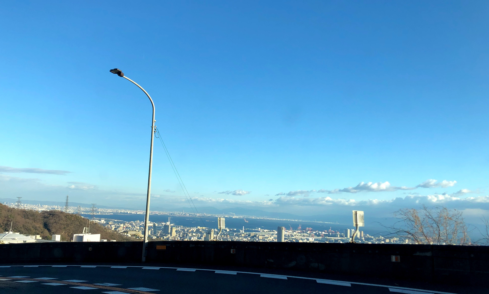

[概要] 新日本百名山の一つでもあり、神戸の夜景を見るには最高の場所です。 [施設] 六甲山アスレチックパーク、六甲ガーデンテラス、六甲オルゴールミュージアム等
観光客や登山客が多いから、「西の軽井沢」って呼ばれとんやで！
140回生 女子
いろんな施設が山にあります！ 展望台はもちろんのこと、オルゴールミュージアムやテラス、アスレチックパークや植物園、牧場までそろっています。 登山で訪れるもよし、六甲山牧場で動物に戯れるもよし、ミュージアムやテラスで優雅な時間を過ごすもよし！ さらに季節限定で、スキーまで楽しむことができます！ まさに山そのものが観光地！！
140回生 女子
いろんな施設が山にあります！
展望台はもちろんのこと、オルゴールミュージアムやテラス、アスレチックパークや植物園、牧場までそろっています。
登山で訪れるもよし、六甲山牧場で動物に戯れるもよし、ミュージアムやテラスで優雅な時間を過ごすもよし！ さらに季節限定で、スキーまで楽しむことができます！
まさに山そのものが観光地！！